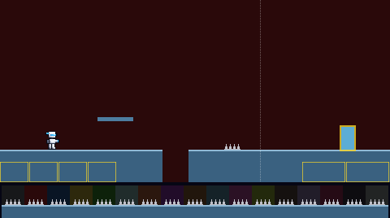
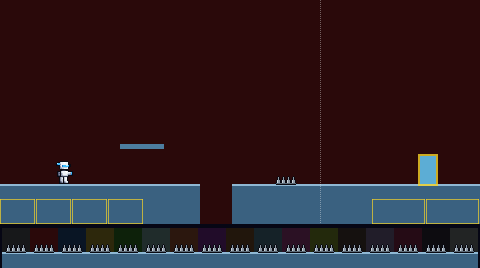
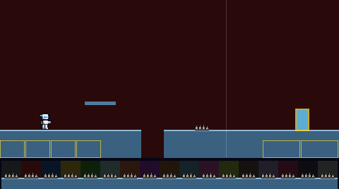

Spike beds: 7 pixels tall, 12 to 24 wide, standing on the floor. They hurt, so they should read first: every variant gives them a near-black outline and a bright lit side. Only the spikes change in these pictures. Shown on the way to the Fire boss, whose dark red backdrop is a hard one for a dark outline.
Flat grey teeth, about 5 pixels each.

Polished cones, lit from the left, with a dark base and an outline.

Shards of uneven height, 5 to 7 pixels, pale on the lit side.

Thin spears with white tips and gaps between them, on an iron bar.
To pick: comment on this board, tag Claude, and give a letter, or say "keep today".